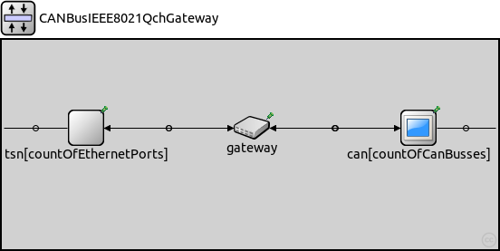
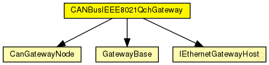
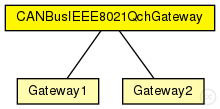

This documentation is released under the Creative Commons license
This documentation is released under the Creative Commons license目的：引入CQF作为以太网的“终端”，该gateway由三部分组成：CanNode,transformation,TSN module; CanNode应该是不用改的，tran..是后面 需要大改的部分。我想使用CQF作为确定性传输机制，所以
The following diagram shows usage relationships between types. Unresolved types are missing from the diagram. Click here to see the full picture.
The following diagram shows inheritance relationships for this type. Unresolved types are missing from the diagram. Click here to see the full picture.
| Name | Type | Description |
|---|---|---|
| Gateway1 | compound module | (no description) |
| Gateway2 | compound module | (no description) |
| Name | Type | Default value | Description |
|---|---|---|---|
| countOfCanBusses | int | 1 |
Number of CAN bus ports |
| countOfEthernetPorts | int | 1 |
Number of Ethernet ports |
| gatewayID | string | "auto" |
Gateway ID in gateway config file. If auto or empty the gateway module name will be used. |
| Name | Value | Description |
|---|---|---|
| display | i=block/layer;bgb=548,231 |
| Name | Direction | Size | Description |
|---|---|---|---|
| ethg [ ] | inout | countOfEthernetPorts |
ethernet connection |
| cang [ ] | inout | countOfCanBusses |
bus connection |
| Name | Type | Default value | Description |
|---|---|---|---|
| can.bufferIn.destination_gates | string | "sinkApp[0].dataIn" |
Comma seperated list of gates where the frames of the buffer are delivered |
| can.bufferIn.MOB | bool | true |
If true frames with the same ID will be overwritten. |
| can.bufferIn.idIncomingFrames | string | "0" |
The Incoming Frame ID(s) - String parameter (int) separated with commas |
| can.bufferOut.destination_gates | string | "" |
Comma seperated list of gates where the frames of the buffer are delivered |
| can.sourceApp.idDataFrames | string | "0" |
The Data Frames ID(s) - String parameter (int) separated with commas |
| can.sourceApp.periodicityDataFrames | string | "0" |
data Frame period(s) for sending of messages - String parameter (int) separated with commas - unit: s |
| can.sourceApp.dataLengthDataFrames | string | "0" |
Datafield-length - String parameter (int) separated with commas - unit: byte |
| can.sourceApp.initialDataFrameOffset | string | "0" |
Offset for the first transmission of the data frames - String parameter (double) separated with commas - unit: s |
| can.sourceApp.idRemoteFrames | string | "0" |
The Remote Frame ID(s) - String parameter (int) separated with commas |
| can.sourceApp.periodicityRemoteFrames | string | "0" |
Remote Frame period(s) for sending of messages - String parameter (int) separated with commas - unit: s |
| can.sourceApp.dataLengthRemoteFrames | string | "0" |
Datafield-length - String parameter (int) separated with commas - unit: byte |
| can.sourceApp.initialRemoteFrameOffset | string | "0" |
Offset for the first transmission of the remote frames - String parameter (double) separated with commas - unit: s |
| can.sourceApp.periodInaccurracy | double | 0s |
Inaccuracy for the node which is added to the schedule time for each frame. |
| can.canClock.maxDrift | double | 0s |
Maximum drift per second |
| can.canClock.maxDriftChange | double | 0s |
Maximum drift change per second |
| can.canClock.randomStartDrift | bool | true |
True if the node should have a random drift at the start of the simulation, false otherwise. |
| gateway.router.configXML | xml | defaultConfigXML |
Path of the gateway configuration xml file |
| gateway.router.gatewayID | string |
Gateway ID in gateway config file. If auto or empty the gateway module name will be used. |
|
| gateway.transform.configXML | xml | defaultConfigXML |
Path of the gateway configuration xml file |
| gateway.transform.gatewayID | string |
Gateway ID in gateway config file. If auto or empty the gateway module name will be used. |
|
| gateway.buffering.configXML | xml | defaultConfigXML |
Path of the gateway configuration xml file |
| gateway.buffering.gatewayID | string |
Gateway ID in gateway config file. If auto or empty the gateway module name will be used. |
// 目的：引入CQF作为以太网的“终端”，该gateway由三部分组成：CanNode,transformation,TSN module; CanNode应该是不用改的，tran..是后面 // 需要大改的部分。我想使用CQF作为确定性传输机制，所以 module CANBusIEEE8021QchGateway { parameters: @display("i=block/layer;bgb=548,231"); //Number of CAN bus ports int countOfCanBusses = default(1); //Number of Ethernet ports int countOfEthernetPorts = default(1); //Gateway ID in gateway config file. If auto or empty the gateway module name will be used. string gatewayID = default("auto"); *.gatewayID = gatewayID; gates: //ethernet connection inout ethg[countOfEthernetPorts]; //bus connection inout cang[countOfCanBusses]; submodules: //bus module can[countOfCanBusses]: CanGatewayNode { @display("p=460,97,c,130"); } //ethernet module tsn[countOfEthernetPorts]: <default("TSNCQFEthernetGatewayHost")> like IEthernetGatewayHost { @display("p=93,97,c,130"); } //gateway module gateway: GatewayBase { @display("p=276,97"); numPorts = countOfCanBusses + countOfEthernetPorts; } connections: for i=0..countOfCanBusses-1 { can[i].upperLayerOut --> gateway.lowerLayerIn++; can[i].upperLayerIn <-- gateway.lowerLayerOut++; can[i].gate <--> cang++; } for i=0..countOfEthernetPorts-1 { tsn[i].upperLayerOut --> gateway.lowerLayerIn++; tsn[i].upperLayerIn <-- gateway.lowerLayerOut++; tsn[i].ethg <--> ethg++; } }
This documentation is released under the Creative Commons license